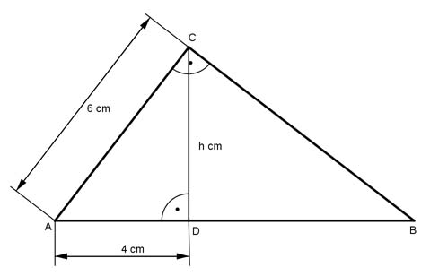

Pythagoras Aufgabe 24 Die Seite AB des rechtwinkligen Dreiecks ADC soll so verlängert werden, dass sie Hypotenuse eines neuen rechtwinkligen Dreiecks wird. Wie lang ist diese Hypotenuse in cm?  Die neue Hypotenuse ist AB. Satz von Pythagoras im Dreieck ADC: AC² = AD² + h² | -AD² h² = AC² - AD² h² = 6² cm² - 4² cm² = 20 cm² Höhensatz: h² = AD * DB 20 = 4 * DB | :4 DB = 5 cm AB = AD + DB = 4 cm + 5 cm = 9 cm